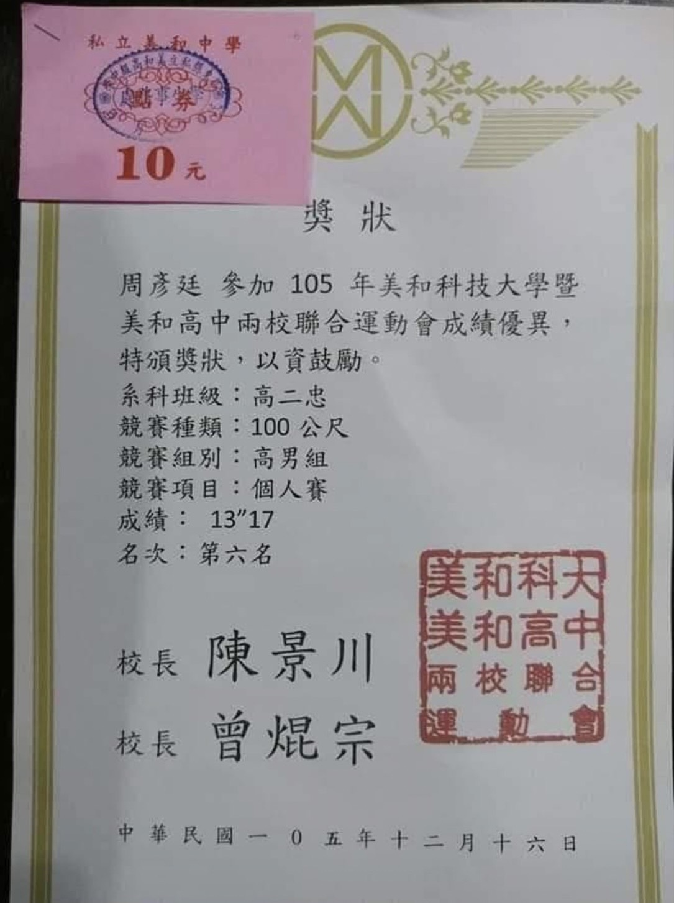
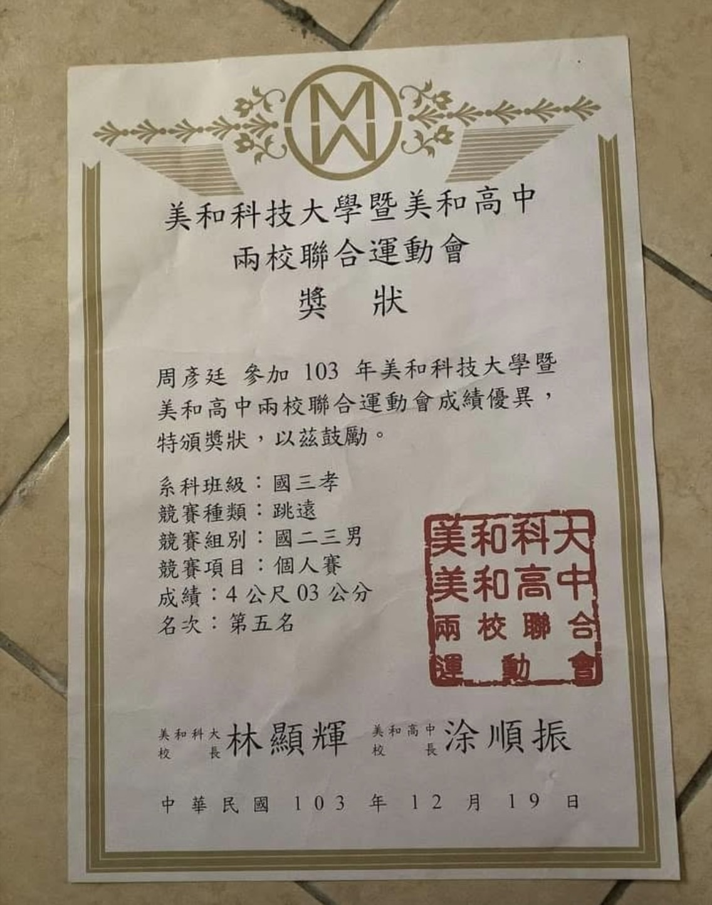
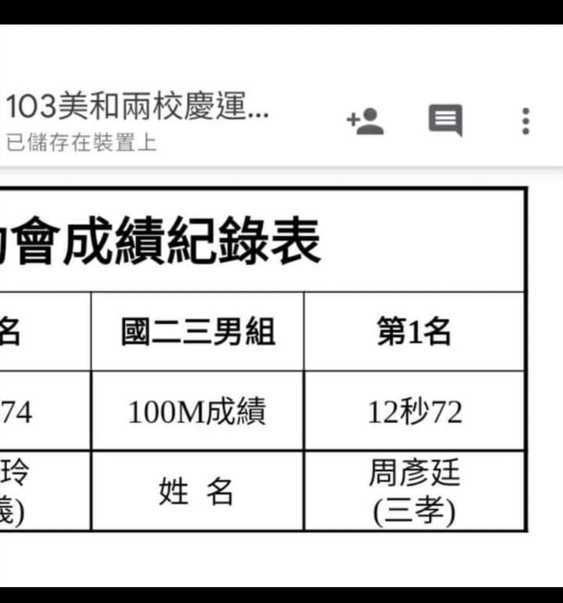

點擊上方的語言選單以切換語言
隨便點選下方一個主題便能快速跳到該主題的說明區
和本網頁的作者一樣孰悉《暮光之城》的朋友們都知道愛德華·庫倫是個生理年齡永遠停留在17歲、氣質超凡且在陽光下會像水晶一樣閃閃發亮的吸血鬼。不過，如果他不是住在華盛頓州濕冷的福克斯小鎮，而是生活在以應試教育為主且上課時數居東亞之冠的台灣呢？他能在那種高壓、密集的高中環境中隱藏身份、正常生活嗎？
| 情境 | 美國電影中的愛德華 | 台灣現實中的愛德華 |
|---|---|---|
| 上學時間 | 早上8點上課，下午3點放學，有自由活動 | 早上7:30到校，下午5點下課，晚上還要補習 |
| 升旗典禮 | 幾乎沒有，戶外活動不多 | 每週強制戶外升旗，站在太陽下曝曬，對於愛德華來說，這可不是普通的戶外活動——他會在陽光下閃閃發亮，輕易暴露吸血鬼身份！ |
| 學校生活節奏 | 相對自由、有社交時間 | 滿課＋補課＋模擬考不停輪替 |
| 身分偽裝難度 | 小鎮轉學生，名字與外貌不易追查 | 有健保卡、戶籍、學籍系統，資料難偽造 |
| 體適能測驗 | 可選擇不參加 | 強制跳遠、仰臥起坐，跳太遠會嚇壞體育老師 |
愛德華永遠17歲，聽起來很棒？但在台灣當高中生，可不是永生就能承受的。
愛德華若生在這種教育環境中，可能會因為精神過度緊繃，開啟吸血鬼本能（咬掉考卷？）
在《暮光之城》中的一個著名場景，愛德華展示了他超凡的速度和力量。他能在幾乎一瞬間跑到貝拉面前，並單手擋下即將失控撞向她的汽車。這個場景其實能夠根據愛德華的速度來做推算。
假設：愛德華的奔跑速度大約是每小時100公里，也就是每秒鐘大約跑27.8米，而失控汽車的速度大約是每小時50公里（約13.9米/秒）。當他看到汽車失控時，愛德華有足夠的時間在不到一秒鐘的時間內跑到貝拉面前，並擋下汽車。
這樣的能力展示了愛德華超凡的反應速度和力量，使他能在極短的時間內完成看似不可能的動作。這樣的速度與力量讓他在面對任何危險時都能游刃有餘，並迅速保護貝拉。
另外，愛德華還能在福克斯小鎮的茂密森林中，揹著貝拉輕鬆地跳躍樹與樹之間。在這裡，周圍的樹木大多是高大且堅固的針葉樹。以下是一些常見的樹種：
這些樹木之間的間距通常大約是10-20公尺，具體取決於樹木的密度。
當愛德華揹著貝拉時，他能跳躍的距離顯然會受到限制，因為貝拉的體重會使他在跳躍時產生額外的負擔。然而，從他在電影中的神情和動作來看，愛德華完成這些高難度的跳躍時似乎毫不費力。因此，我們可以推測出他在沒有負重的情況下，若全力以赴跳躍，能輕鬆跳過80-100公尺的距離。
換句話說，愛德華的超凡體能使得他能夠輕鬆跨越這些樹木之間的間距，並且在無負重情況下的跳躍能力將讓他突破常人的極限，幾乎可以達到或超過100公尺的距離。
下方的插入影片展現愛德華的奔跑速度和跳躍能力，背景音樂為《查理九世》你說你立定跳遠的成績是 295 公分，立定跳高的成績是 45 公分，一百公尺的成績是 12 秒多（這些都是本網頁的作者讀高中時的體測成績）？恭喜，你都還是人類！愛德華可是能輕鬆跳過整座貨車和輕鬆趕上跑車的吸血鬼。



要知道，在台灣：
愛德華的能力太過於強大，他根本無法參加台灣的運動會，否則他的超能力會顯得太過異常。來看一些他可能遇到的困境：
因此，雖然愛德華的體能極其強大，但在台灣的運動會中，他的參賽將會是「作弊」的代名詞，根本不可能繼續下去！
在電影裡，愛德華只需要換名字、轉學、裝年輕，就能繼續在不同城市「重新開始」。
但在台灣？
更別說同學阿嬤可能是你上輩子的同班同學，一翻出舊畢業紀念冊就認出你來。
《暮光之城》裡的愛德華已經夠陰鬱了。但若放在台灣學測制度底下，他的心理狀態可能會變成這樣：
「我已經活了百年……但從沒經歷過段考前一週那麼痛苦的事。」 ——愛德華·庫倫，2025，台中一中學生
愛德華在美國，只需要擔心不要咬到人、不被太陽照到、不讓女友發現你沒體溫。
但在台灣，他要應付的有：
在這裡，連吸血鬼都得問：我能不能休學重考？